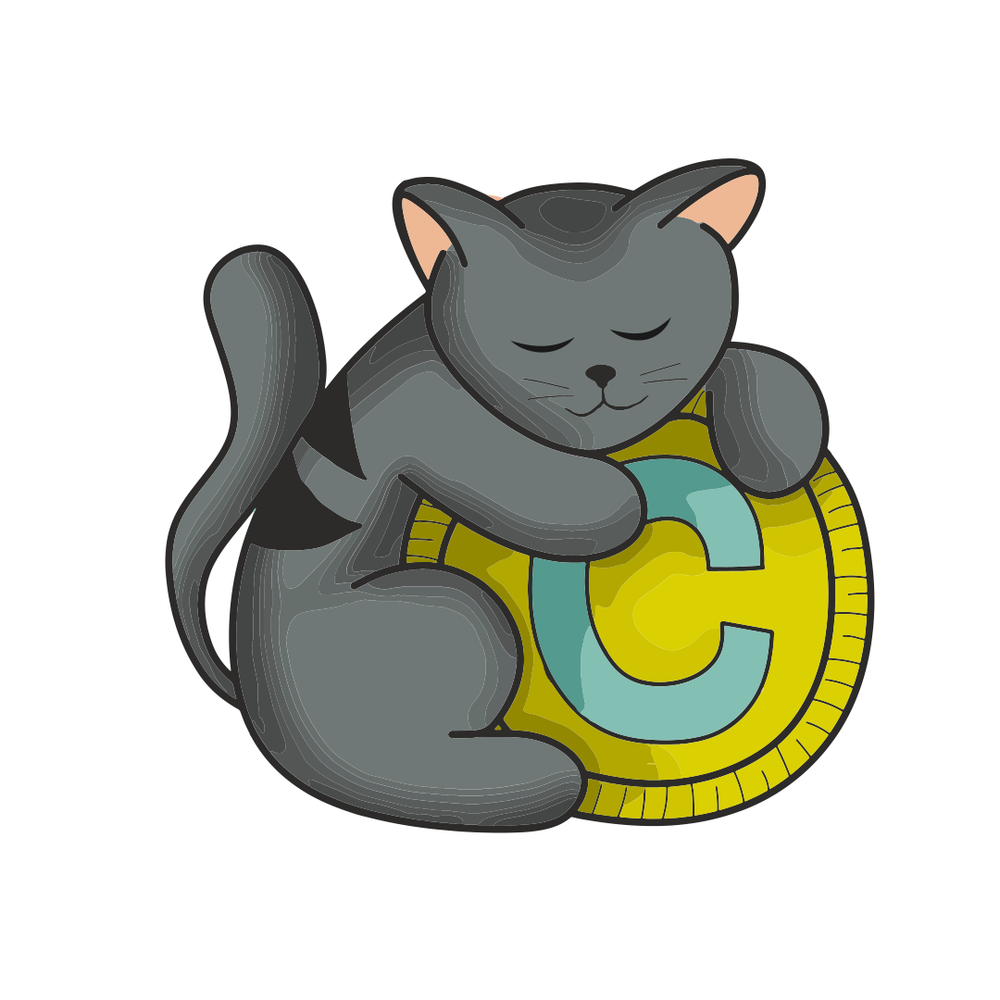

<div id="logo-cripoCat">
    <div class="menu">
        <div class="container">
            <button class="boton">
                <div class="d-flex">
                        <a class="boton-menu" href="#" id="navbarDropdownMenuLink" role="button" data-bs-toggle="dropdown" aria-expanded="false">
                            MENÚ
                        </a>
                        <fa-icon class="icon"[icon]="faChevronCircleDown" >
                        </fa-icon>
                        
                        <ul class="dropdown-menu" aria-labelledby="navbarDropdownMenuLink">
                            <li><a class="dropdown-item" href="#" routerLink="/usuario/inicio">Contacto</a></li>
                            <li><a class="dropdown-item" href="#">Ayuda</a></li>
                            <li><a class="dropdown-item" href="#">Acerca de</a></li>
                        </ul>
                </div>
            </button>
        </div>    
    </div>
    <div class="logo-imagen">
        
    </div>
</div>
